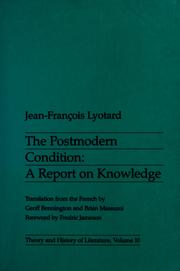

Documents
- Course syllabus (archival copy)
The welcome, requirements, policies and schedule pages of this site in one printable file. Student names, meeting links and links to course readings have been removed. (PDF, 348 KB)
CMLIT 597
Fall 2023 · Penn State

The welcome, requirements, policies and schedule pages of this site in one printable file. Student names, meeting links and links to course readings have been removed. (PDF, 348 KB)